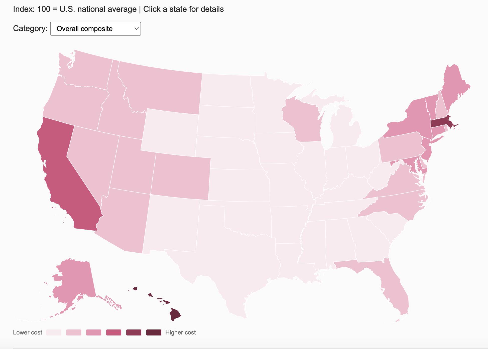
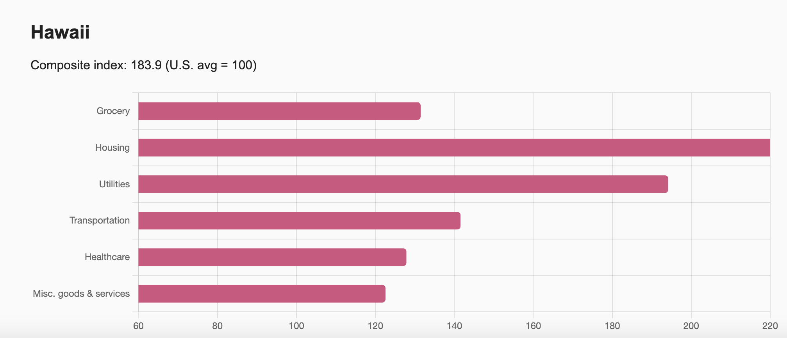
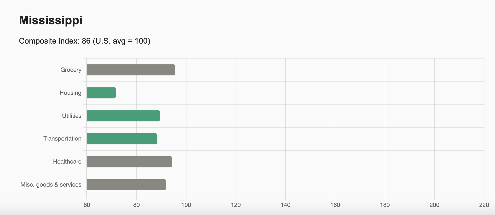

Index: 100 = U.S. national average | Click a state for details and scroll!
Which states are the most and least affordable, and does cost vary across different spending categories?
When I thought of the idea, I wanted to create an interactive map that could give stats on the different costs of living for each state. I included all the states becuase I wanted this map to be as geographically accurate as possible. I chose the attributes "Composite" (overall expenses), "Grocery," "Housing," "Utilities," "Transportation," "Healthcare," and "Misc." (all other expenses) because the dataset I got my information from included them, and these factors perfectly highlight how the average American spends their money. At first, I was reluctant to add "Misc," but after looking at the data, I concluded that there are many different expenses that would be unaccounted for without it. Later on, I thought of adding the drop-down box for users to pick what attribute/factor they wanted in order for them to see the impact of that factor on cost of living in real-time. I believe it makes the map more interactive and gives viewers a deeper understanding of what each state's most/least expensive attribute is.
I chose a choropleth map because I was working with a large georaphical area (the entire USA) and this type of map is ideal for showing color-coded patterns and trends across a population. Using this map, I was able to transform large, location-based data into an easily understandable visualization. This allows users to see what states cost the most to live in, where they are, and how location plays a role in determing living costs.
For the color scheme, I used a single pink ramp running from light (low cost) to dark (high cost). A single-hue scale was better for my data since the values are clearly ordered low to high, and a single color does not imply any negative judgement about either end. Diverging scales (one color to another) was avoided because the goal of my map was not to indicate whether one cost of living was "good" or "bad" compared to another.
I added the cateogry dropdown later in the design process after realizing the composite index was hiding interesting variation within states. For example, a state could have an average overall index but a very high housing cost. The dropdown lets users switch between the seven spending categories as the map recolors instantly, making comparison between states possible without leaving the map view.
I chose a click-to-drill bar chart to give users a way to see individual states in detail. When a state is clicked, a horizontal bar chart appears below the map showing all six categories side-by-side. The horizontal bar chart was chosen because the category labels were long and read better left to right. A bar chart is the most accurate and convenient way of portraying the data from my dataset, allowing me to compare multiple variables against each other. I chose to highlight when an attribute was above average (dark pink), below average (teal), and average (gray) using different colors to signify outliers within each state to the viewer.
The most immediate finding visible on the map is the stark coastal divide: states along the West Coast and Northeast are consistently the most expensive in the country, while the South and Midwest cluster well below the national average of 100. This pattern holds across nearly every spending category, suggesting that regional cost differences are broad rather than driven by any single factor.

Hawaii stands out as the most expensive state significantly, with a composite index of 183.9, which is nearly double the national average. Switching the dropdown to Housing makes this even more dramatic, as Hawaii's housing index reaches 299.0, meaning housing costs there are almost three times the U.S. average. This is an example of how the composite index can understate how extreme a single category can be.

Mississippi and Oklahoma sit at the opposite end of the spectrum as the most affordable states, with composite indexes of 86.0 and 84.7 respectively. Both states score below 90 across most categories, making them consistently cheap rather than cheap in just one area. This is worth noting because some states appear affordable overall but have one expensive category hidden inside the composite number.

One of the most interesting findings came from switching to the Healthcare dropdown. Unlike the housing map, where expensive states are clustered on the coasts, healthcare costs are far more scattered geographically. States like Alaska (139.2), Massachusetts (134.2), and Oregon (117.9) rank high, but so do several inland states like North Dakota (108.8) and New Mexico (108.3). This suggests healthcare pricing follows different forces than housing.
Texas shows how the composite index can be misleading. Its overall index of 91.1 suggests it is comfortably below average, but clicking Texas reveals that its Utilities index sits at 102.9, the national average, while Housing (79.4) pulls the composite down significantly. Users who rely only on the composite map would miss this internal variation, which is exactly the kind of information the drill-down bar chart was designed to reveal.
Finally, comparing California and New York shows that even two similarly expensive states (143.1 and 125.8 composite) spend their money in different ways. California's Transportation index is 136.8, one of the highest in the country, while New York's is 108.1, likely reflecting New York City's vast public transit network reducing car-related costs. These kinds of differences are invisible on the map alone and only emerge through the category drill-down.
Missouri Economic Research and Information Center (MERIC), 2025 Annual Average Cost of Living Index. meric.mo.gov
A narrated walkthrough of the visualization and key findings.